Shapes
A shape is a geometrical figure that can be displayed on the map. The NAVER Maps SDK provides three types of shape overlays: polygons, polylines and circles.
Polyline overlays
NMFPolylineOverlay is an overlay that draws a line. It allows you to specify the stroke width, color, stroke pattern, line cap type and joint type of a line. A polyline overlay is proper for a line as a figure. If you need to express an element such as a path, use NMFPath.
Add and remove polyline overlays
A polyline overlay can be created just like a general class object. Create an object, set a list of coordinates in the points property and then set a map object in the mapView property to add a polyline overlay. Note that you should set the points property before setting the mapView property; otherwise a marker is not added to the map.
The following code example creates a polyline overlay object and adds it to the map.
let poly = NMFPolylineOverlay(points: [
NMGLatLng(lat: 37.57152, lng: 126.97714),
NMGLatLng(lat: 37.56607, lng: 126.98268),
NMGLatLng(lat: 37.56445, lng: 126.97707),
NMGLatLng(lat: 37.55855, lng: 126.97822)])
polyline.mapView = mapView
Swift
let poly = NMFPolylineOverlay(points: [
NMGLatLng(lat: 37.57152, lng: 126.97714),
NMGLatLng(lat: 37.56607, lng: 126.98268),
NMGLatLng(lat: 37.56445, lng: 126.97707),
NMGLatLng(lat: 37.55855, lng: 126.97822)])
polyline.mapView = mapView
Objective-C
NMFPolylineOverlay *polyline = [NMFPolylineOverlay polylineOverlayWithPoints:@[
NMGLatLngMake(37.57152, 126.97714),
NMGLatLngMake(37.56607, 126.98268),
NMGLatLngMake(37.56445, 126.97707),
NMGLatLngMake(37.55855, 126.97822)
]];
polyline.mapView = self.mapView;
The following figure shows a polyline overlay added to the map.
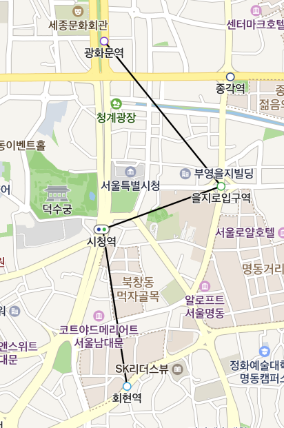
Set the mapView property to nil, and the polyline overlay disappears from the map.
The following code example removes a polyline overlay from the map.
polyline.mapView = nil
Swift
polyline.mapView = nil
Objective-C
polyline.mapView = nil;
List of coordinates
The points property specifies a list of coordinates. This property is required; a polyline overlay with no coordinates specified is not added to the map. Also, if the list of coordinates is less than 2 in size or has nil, the polyline overlay is not added to the map.
The following code example specifies a list of coordinates for a polyline overlay.
polyline.points = [
NMGLatLng(lat: 37.57152, lng: 126.97714),
NMGLatLng(lat: 37.56607, lng: 126.98268),
NMGLatLng(lat: 37.56445, lng: 126.97707),
NMGLatLng(lat: 37.55855, lng: 126.97822)
]
Swift
polyline.points = [
NMGLatLng(lat: 37.57152, lng: 126.97714),
NMGLatLng(lat: 37.56607, lng: 126.98268),
NMGLatLng(lat: 37.56445, lng: 126.97707),
NMGLatLng(lat: 37.55855, lng: 126.97822)
]
Objective-C
polyline.points = @[
NMGLatLngMake(37.57152, 126.97714),
NMGLatLngMake(37.56607, 126.98268),
NMGLatLngMake(37.56445, 126.97707),
NMGLatLngMake(37.55855, 126.97822)
];
Even if you change the coordinates object obtained with the points property, the changes are not applied. To apply the changes, the changed coordinates object should be set in the points property again.
The following code example changes part of the list of coordinates of a polyline overlay.
var points = polyline.points
points?.insert(NMGLatLng(lat: 37.5734571, lng: 126.975335), at: 0) // Not yet applied.
polyline.points = points // Applied.
Swift
var points = polyline.points
points?.insert(NMGLatLng(lat: 37.5734571, lng: 126.975335), at: 0) // Not yet applied.
polyline.points = points // Applied.
Objective-C
NSMutableArray<NMGLatLng *> *points = [NSMutableArray arrayWithArray:polyline.points];
[points insertObject:NMGLatLngMake(37.5734571, 126.975335) atIndex:0]; // Not yet applied.
polyline.points = points; // Applied.
Width
The width property specifies the width of a polyline overlay.
The following code example sets the width of a polyline overlay to 5 pt.
polyline.width = 5
Swift
polyline.width = 5
Objective-C
polyline.width = 5;
The following figure shows a polyline overlay with the width specified as 5 pt.
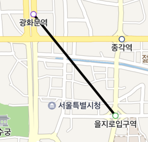
Fill color
The color property specifies the color of a polyline overlay.
The following code example sets the color of a polyline overlay to green.
polyline.color = UIColor.green
Swift
polyline.color = UIColor.green
Objective-C
polyline.color = UIColor.greenColor;
The following figure shows a polyline overlay with the color specified as green.

Stroke pattern
The pattern property specifies the stroke pattern of a polyline overlay. The stroke pattern is expressed as an array of integers in pt, where the elements with even indexes are the length of a dash, and those with odd indexes are the length of a gap. For example, an array of [5, 10, 3, 7] repeats the pattern that includes a dash of 5 pt, a gap of 10 pt, a dash of 3 pt and a gap of 7 pt.
The following code example sets the stroke pattern of a polyline overlay to a dash of 6 pt and a gap of 3 pt.
polyline.pattern = [6, 3]
Swift
polyline.pattern = [6, 3]
Objective-C
polyline.pattern = @[6, 3];
The following figure shows a polyline overlay with the stroke pattern specified above.
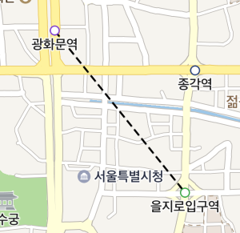
Line cap type
The capType property specifies the cap type of a polyline overlay. The available line cap types are defined in the LineCap enum. The following three types are available:
Round: Adds a semicircle with diameter equal to the stroke width at the end of the line.Butt: This cap is squared off exactly at the end of the line, at the specified coordinates.Square: This cap is squared off after extending half the stroke width at the end of the line.
The following figure shows the line cap types, Round, Butt, and Square from the top to the bottom.
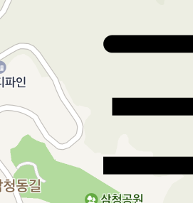
The following code example sets the cap type of a polyline overlay to Round.
polyline.capType = .round
Swift
polyline.capType = .round
Objective-C
polyline.capType = NMFOverlayLineCapRound;
Joint type
The joinType property specifies the joint type of a polyline overlay. The available joint types are defined in the LineJoin enum. The following three types are available:
Bevel: Flat bevel on the outside of the joint.Miter: Mitered joint with fixed pointed extrusion on the outside of the joint.Round: Rounded on the outside of the joint.
The following figure shows the joint types, Bevel, Miter, and Round from the left to the right.
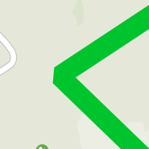 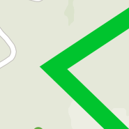 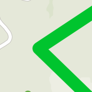
The following code example sets the joint type of a polyline overlay to Round.
polyline.joinType = .round
Swift
polyline.joinType = .round
Objective-C
polyline.joinType = NMFOverlayLineJoinRound;
Polygon overlays
NMFPolygonOverlay is an overlay that draws a polygon. A polygon overlay consists of an exterior ring and an interior ring, expressing various types of figures, including simple triangles, rectangles and polygons with holes. You can specify the fill color, stroke width and stroke color of a polygon overlay.
Add and remove polygon overlays
A polygon overlay can be created just like a general class object. Create an object, set NMGPolygon in the polygon property, and then set a map object in the mapView property to add a polygon overlay. Note that you should set the polygon property before setting the mapView property; otherwise a polygon is not added to the map.
The following code example creates a polygon overlay object and adds it to the map.
let polygon = NMGPolygon(ring: NMGLineString(points: [
NMGLatLng(lat: 37.5640984, lng: 126.9712268),
NMGLatLng(lat: 37.5625365, lng: 126.9832241),
NMGLatLng(lat: 37.5585305, lng: 126.9809297),
NMGLatLng(lat: 37.5590777, lng: 126.974617)]))
let polygonOverlay = NMFPolygonOverlay(polygon as! NMGPolygon<AnyObject>)
polygonOverlay.mapView = mapView
Swift
let polygon = NMGPolygon(ring: NMGLineString(points: [
NMGLatLng(lat: 37.5640984, lng: 126.9712268),
NMGLatLng(lat: 37.5625365, lng: 126.9832241),
NMGLatLng(lat: 37.5585305, lng: 126.9809297),
NMGLatLng(lat: 37.5590777, lng: 126.974617)]))
let polygonOverlay = NMFPolygonOverlay(polygon as! NMGPolygon<AnyObject>)
polygonOverlay.mapView = mapView
Objective-C
NMGPolygon *polygon = [NMGPolygon polygonWithRing:[NMGLineString lineStringWithPoints:@[
NMGLatLngMake(37.5640984, 126.9712268),
NMGLatLngMake(37.5651279, 126.9767904),
NMGLatLngMake(37.5625365, 126.9832241),
NMGLatLngMake(37.5585305, 126.9809297),
NMGLatLngMake(37.5590777, 126.974617)
]]];
NMFPolygonOverlay *polygonOverlay = [NMFPolygonOverlay polygonOverlay:polygon];
polygonOverlay.mapView = self.mapView;
The following figure shows a polygon overlay added to the map.
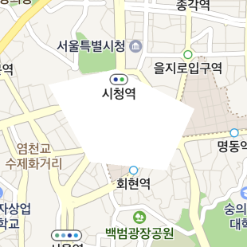
Set the mapView property to nil, and the polygon overlay disappears from the map.
The following code example removes a polygon overlay from the map.
polygonOverlay.mapView = nil
Swift
polygonOverlay.mapView = nil
Objective-C
polygonOverlay.mapView = nil;
Polygon
The -updatePolygon: property specifies NMGPolygon. This property is required and the exteriorRing of a polygon should be in clockwise order; otherwise the polygon is not properly drawn or cannot receive an event. A polygon overlay with the polygon not specified is not added to the map. Also, if the size of exteriorRing of a polygon is less than 3 in size or has nil, the polygon overlay is not added to the map.
Inner hole
The interiorRings property of polygon creates a hole in a polygon overlay. A polygon can have multiple inner holes, which can neither be colored nor receive events. The list of coordinates to specify each hole should be in counterclockwise order; otherwise it is not properly drawn or the polygon cannot receive an event. Also, if the list of coordinates of each hole is less than 3 in size or has nil, the hole is not added.
The following code example specifies a hole in a polygon overlay.
let polygon = NMGPolygon(ring: NMGLineString(points: points), interiorRings: [NMGLineString(points: [
NMGLatLng(lat: 37.5612243, lng: 126.9768938),
NMGLatLng(lat: 37.5627692, lng: 126.9795502),
NMGLatLng(lat: 37.5628377, lng: 126.976066)])])
let polygonWithHole = NMFPolygonOverlay(polygon as! NMGPolygon<AnyObject>)
Swift
let polygon = NMGPolygon(ring: NMGLineString(points: points), interiorRings: [NMGLineString(points: [
NMGLatLng(lat: 37.5612243, lng: 126.9768938),
NMGLatLng(lat: 37.5627692, lng: 126.9795502),
NMGLatLng(lat: 37.5628377, lng: 126.976066)])])
let polygonWithHole = NMFPolygonOverlay(polygon as! NMGPolygon<AnyObject>)
Objective-C
NMGPolygon *polygon = [NMGPolygon polygonWithRing:[NMGLineString lineStringWithPoints:points]
interiorRings:@[
[NMGLineString lineStringWithPoints:@[
NMGLatLngMake(37.5612243, 126.9768938),
NMGLatLngMake(37.5627692, 126.9795502),
NMGLatLngMake(37.5628377, 126.976066)]]]];
NMFPolygonOverlay *polygonWithHole = [NMFPolygonOverlay polygonOverlay:polygon];
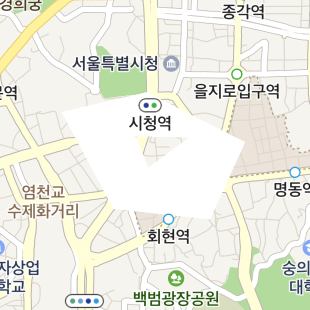
Fill color
The fillColor property specifies the fill color of a polygon overlay.
The following code example sets the color of a polygon overlay to green.
polygon.fillColor = UIColor.green
Swift
polygon.fillColor = UIColor.green
Objective-C
polygon.fillColor = UIColor.greenColor;
The following figure shows a polygon overlay with the fill color set to green.
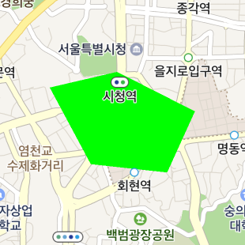
Stroke width
The outlineWidth property specifies the stroke width of a polygon overlay. Set the property to 0 to draw no outline.
The following code example sets the stroke width of a polygon overlay to 3 pt.
polygon.outlineWidth = 3
Swift
polygon.outlineWidth = 3
Objective-C
polygon.outlineWidth = 3;
The following figure shows a polyline overlay with the stroke width set to 3 pt.
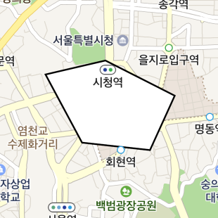
Stroke color
The outlineColor property specifies the stroke color of a polygon overlay.
The following code example sets the stroke color of a polygon overlay to green.
polygon.outlineColor = UIColor.green
Swift
polygon.outlineColor = UIColor.green
Objective-C
polygon.outlineColor = UIColor.greenColor;
The following figure shows a polygon overlay with the stroke color set to green.
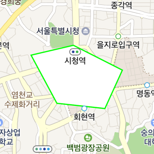
Circle overlays
NMFCircleOverlay is an overlay that draws a circle with the specified center and radius. You can specify the fill color, stroke width and stroke color of a circle overlay.
Add and remove circle overlays
A circle overlay can be created just like a general class object. Create an object, set a center in the center property and a radius in the radius property, and then set a map object in the mapView property to draw a circle overlay. Note that you should set the center property before setting the mapView property; otherwise a circle overlay is not added to the map.
The following code example creates a circle overlay object and adds it to the map.
let circle = NMFCircleOverlay()
circle.center = NMGLatLng(lat: 37.5666102, lng: 126.9783881)
circle.radius = 500
circle.mapView = mapView
Swift
let circle = NMFCircleOverlay()
circle.center = NMGLatLng(lat: 37.5666102, lng: 126.9783881)
circle.radius = 500
circle.mapView = mapView
Objective-C
NMFCircleOverlay *circle = [NMFCircleOverlay new];
circle.center = NMGLatLngMake(37.5666102, 126.9783881);
circle.radius = 500;
circle.mapView = self.mapView;
The following figure shows a circle overlay added to the map.
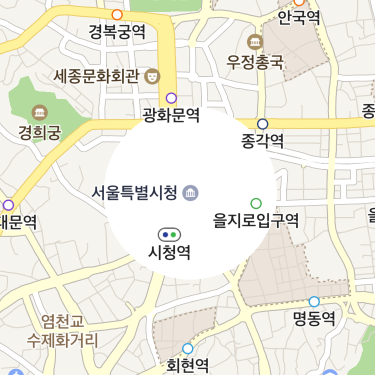
Set the mapView property to nil, and the circle overlay disappears from the map.
The following code example removes a circle overlay from the map.
circle.mapView = nil
Swift
circle.mapView = nil
Objective-C
circle.mapView = nil;
Center
The center property specifies the center of a circle overlay. This property is required; a circle overlay with no center specified is not added to the map. If you change the coordinates of the circle overlay that is already added to the map, it moves to the changed coordinates.
The following code example specifies the center of a circle overlay.
circle.center = NMGLatLng(lat: 37.5666102, lng: 126.9783881)
Swift
circle.center = NMGLatLng(lat: 37.5666102, lng: 126.9783881)
Objective-C
circle.center = NMGLatLngMake(37.5666102, 126.9783881);
Radius
The radius property specifies the radius of a circle overlay.
The following code example sets the radius of a circle overlay to 500 meters.
circle.radius = 500
Swift
circle.radius = 500
Objective-C
circle.radius = 500;
Fill color
The fillColor property specifies the fill color of a polygon overlay.
The following code example sets the fill color of a circle overlay to green.
circle.fillColor = UIColor.green
Swift
circle.fillColor = UIColor.green
Objective-C
circle.fillColor = UIColor.greenColor;
The following figure shows a circle overlay with the fill color set to green.
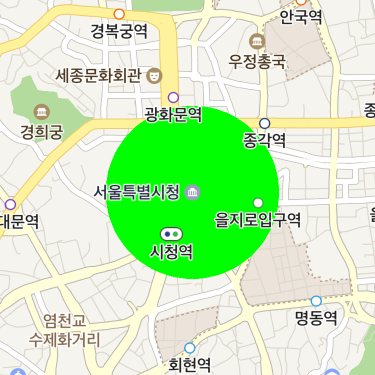
Stroke width
The outlineWidth property specifies the stroke width of a circle overlay.
The following code example sets the stroke width of a circle overlay to 5 pt.
circle.outlineWidth = 5
Swift
circle.outlineWidth = 5
Objective-C
circle.outlineWidth = 5;
The following figure shows a circle overlay with the stroke width set to 5 pt.
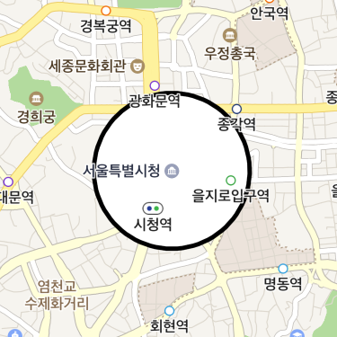
Stroke color
The outlineColor property specifies the stroke color of a circle overlay.
The following code example sets the stroke color of a circle overlay to green.
circle.outlineColor = UIColor.green
Swift
circle.outlineColor = UIColor.green
Objective-C
circle.outlineColor = UIColor.greenColor;
The following figure shows a circle overlay with the stroke color specified as green.